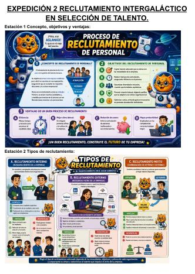
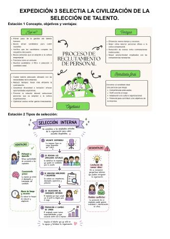
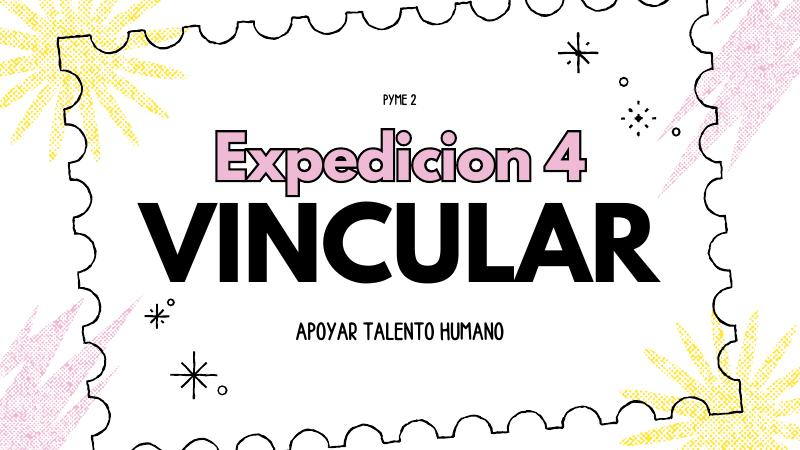
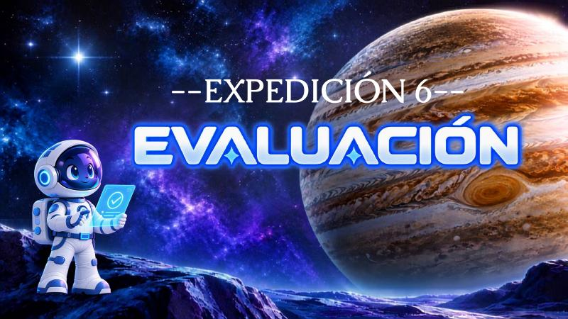
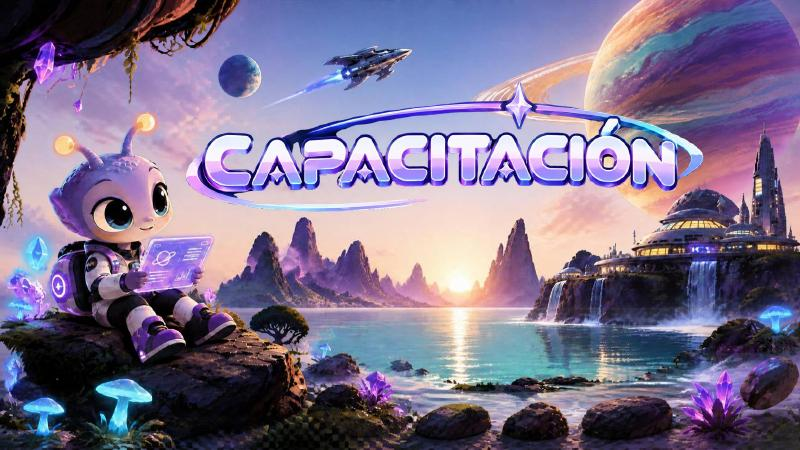

Apoyo a Talento Humano
Los documentos del proceso de talento humano de Macondo Kogui, en orden: del protocolo de servicio y la presentación de la empresa al reclutamiento, la selección, la vinculación, la inducción, la evaluación y la capacitación.
1
Protocolo de servicio al cliente Cultura de servicio, servicio inclusivo, procedimiento, PQRS y clientes difíciles. 28 páginas · PDF
2
Presentación Macondo Kogui Misión, visión, valores, políticas, estructura orgánica y organigrama. 19 páginas · PDF

3
Reclutamiento Expedición 2: concepto, tipos y fases de reclutamiento, y documentos clave. 7 páginas · PDF

4
Selección Expedición 3: concepto, tipos de selección y fase de evaluación. 8 páginas · PDF

5
Vinculación Expedición 4: concepto, objetivos y ventajas de vincular al talento humano. 27 páginas · PDF
6
Inducción Expedición 5: concepto, objetivos y ventajas de la inducción. 15 páginas · PDF

7
Evaluación del desempeño Expedición 6: fortalezas, oportunidades de mejora y necesidades del trabajador. 11 páginas · PDF

8
Capacitación Concepto, objetivos y ventajas de la capacitación y formación del personal. 12 páginas · PDF
Elige uno de los documentos de la lista para verlo aquí.
Anterior
—
Siguiente